This TBC Classic Cooking leveling guide will show you the fastest way to level your Cooking skill up from 1 to 375 in Burning Crusade Classic.
This TBC Classic Cooking leveling guide will show you the fastest way to level your Cooking skill up from 1 to 375 in Burning Crusade Classic.
Often the materials are based on a case that you will gain one skill point for each craft. This won't happen, so you will probably have to buy a few extra materials.
If you also want to level Fishing but haven't leveled it yet, you should use my Fishing and Cooking leveling guide instead:
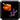
Cooking Trainers
To become an Apprentice Cook, you need to reach level 5 and find a Cooking trainer.
If you are having trouble finding trainers, you can walk up to a guard in any major city and ask where the Cooking trainer is. After you ask the guard, the trainer will be marked with a red flag on your map.
Horde trainers:
 Zamja in Orgrimmar.
Zamja in Orgrimmar.- Eunice Burch in Undercity.
- Aska Mistrunner in Thunder Bluff.
- Duhng in The Barrens
- Mudduk in Stranglethorn Vale
- Pyall Silentstride in Mulgore.
- Sylann in Silvermoon City.
Alliance trainers:
 Stephen Ryback in Stormwind City.
Stephen Ryback in Stormwind City.- Daryl Riknussun in Ironforge.
- Alegorn in Darnassus.
- Gremlock Pilsnor in Dun Morogh.
- Tomas in Elwyn Forest.
- Zarrin in Teldrassil
- Mumman in The Exodar.
TBC Cooking Leveling
1 - 40
60x Spice Bread - 60x Simple Flour, 60x 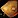
Cooking Supply vendors near your trainer sell these:
Don't buy them from the Auction House!
40 - 65
Make around 25-35 from any recipes in the table below. You don't have to make the same recipe, you can make a few from each.
| Food | Ingredients | Recipe Source |
|---|---|---|
| 35x Roasted Boar Meat | 35x Chunk of Boar Meat | Trainer |
| 25x Smoked Bear Meat | 25x 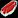 Bear Meat |
Sold by |
| 30x Spiced Wolf Meat | 30x Stringy Wolf Meat | Trainer |
| 35x Brilliant Smallfish | 35x | Vendors |
| 35x Slitherskin Mackerel | 35x Raw Slitherskin Mackerel | Vendors |
Journeyman Cooking
65 - 110
Learn Journeyman Cooking from your trainer. (Requires level 10 and Cooking 50)
You can keep making Smoked Bear Meat, but only up to around 90, so you will need around 35 Bear Meat.
Make around 65 from any of the recipes in the table below.
| Food | Ingredients | Recipe Source |
|---|---|---|
| 65x | 65x 65x Refreshing Spring Water (Vendor) | Trainer |
| 65x Coyote Steak | 65x 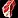 Coyote Meat | Trainer |
| 65x | 65x | Vendors |
| 65x Bat Bites | 65x 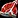 Bat Flesh | |
| 65x Strider Stew | 65x Strider Meat 65x 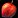 Shiny Red Apple (Vendor) |
110 - 130
Make around 20-30 from any recipes in the table below.
| Food | Ingredients | Recipe Source |
|---|---|---|
| 30x Crab Cake | 30x 30x Mild Spices (Vendor) | Trainer |
| 25x 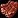 Dry Pork Ribs | 25x Boar Ribs 25x Mild Spices (Vendor) | Trainer |
| 20x | 20x | Vendors |
| 23x Cooked Crab Claw | 23x Crawler Claw 23x Mild Spices (Vendor) |
Expert Cooking
To train past 150 in Cooking, you need to buy the book  Expert Cookbook from
Expert Cookbook from  Wulan (Horde) in Desolace at Shadowprey Village or from
Wulan (Horde) in Desolace at Shadowprey Village or from  Shandrina (Alliance) in Ashenvale.
Shandrina (Alliance) in Ashenvale.
130 - 175
50x Curiously Tasty Omelet - 50  Raptor Egg
Raptor Egg
The recipe is sold by  Kendor Kabonka in Stormwind City and by
Kendor Kabonka in Stormwind City and by  Keena in Arathi Highlands.
Keena in Arathi Highlands.
Alternative recipes
-
Make
 Bristle Whisker Catfish if you can find cheap Raw Bristle Whisker Catfish at the Auction House. The recipe is sold by these vendors.
Bristle Whisker Catfish if you can find cheap Raw Bristle Whisker Catfish at the Auction House. The recipe is sold by these vendors. -
Horde players can also get
 Recipe: Hot Lion Chops from Zargh in The Barrens at Crossroads. It's a good alternative if you can get some Lion Meat.
Recipe: Hot Lion Chops from Zargh in The Barrens at Crossroads. It's a good alternative if you can get some Lion Meat.
175 - 225
50x Roast Raptor - 50 Raptor Flesh
The  Recipe: Roast Raptor is sold by
Recipe: Roast Raptor is sold by  Hammon Karwn and by
Hammon Karwn and by  Keena in Arathi Highlands.
Keena in Arathi Highlands.
Alternative recipes
-
Make Soothing Turtle Bisque if you can get some Turtle Meat. The recipe is a reward for completing the "Soothing Turtle Bisque" quest. You can pick up this quest from
Chef Jessen and Christoph Jeffcoat in Hillsbrad Foothills. -
Make
 Mithril Headed Trout if you can buy cheap Raw Mithril Head Trout. The recipe is sold by these vendors.
Mithril Headed Trout if you can buy cheap Raw Mithril Head Trout. The recipe is sold by these vendors.
Artisan Cooking
To train past 225 in Cooking, you have to complete the  Clamlette Surprise quest. You can get this quest at level 35+ with 225 Cooking skill.
Clamlette Surprise quest. You can get this quest at level 35+ with 225 Cooking skill.
You will need these to complete the quest:
- 12x
 Giant Egg
Giant Egg - 10x
 Zesty Clam Meat
Zesty Clam Meat - 20x
 Alterac Swiss
Alterac Swiss
Don't go to Gadgetzan before you get the quest items!
Horde players can start the questline by picking up the 
 To Gadgetzan You Go! quest from
To Gadgetzan You Go! quest from  Zamja in Orgrimmar.
Zamja in Orgrimmar.
Alliance players can start the questline by picking up the 
 I Know A Guy... quest from
I Know A Guy... quest from  Daryl Riknussun in Ironforge.
Daryl Riknussun in Ironforge.
Both quests will lead you to Dirge Quikcleave in Gadgetzan. Once you find him, he'll give you the  Clamlette Surprise quest. Hand in all of the materials, and you will learn Artisan Cooking.
Clamlette Surprise quest. Hand in all of the materials, and you will learn Artisan Cooking.
225 - 250
Make 25 from one of the recipes below.
- 25x
 Undermine Clam Chowder - 50 Zesty Clam Meat, 25
Undermine Clam Chowder - 50 Zesty Clam Meat, 25 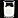
Ice Cold Milk - 25x Spotted Yellowtail - 25 Raw Spotted Yellowtail
- 25x
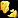
Monster Omelet - 25Giant Egg - 25x
 Tender Wolf Steak - 25 Tender Wolf Meat
Tender Wolf Steak - 25 Tender Wolf Meat - 25x Filet of Redgill - 25 Raw Redgill
 Recipe: Undermine Clam Chowder is sold by Jabbey in Tanaris. (If you are in Tanaris, you should also visit Gikkix and buy every recipe from him.) Ice Cold Milk is sold by most Innkeepers or bartenders. It's a limited supply recipe, so if someone bought it before you, you have to wait for it to respawn. I'm not sure about the exact respawn timer. (or buy it from the Auction House)
Recipe: Undermine Clam Chowder is sold by Jabbey in Tanaris. (If you are in Tanaris, you should also visit Gikkix and buy every recipe from him.) Ice Cold Milk is sold by most Innkeepers or bartenders. It's a limited supply recipe, so if someone bought it before you, you have to wait for it to respawn. I'm not sure about the exact respawn timer. (or buy it from the Auction House)
 Recipe: Spotted Yellowtail is sold by Gikkix in Tanaris. You should also buy
Recipe: Spotted Yellowtail is sold by Gikkix in Tanaris. You should also buy  Recipe: Nightfin Soup and
Recipe: Nightfin Soup and  Recipe: Poached Sunscale Salmon from him because you might use it in the next step.
Recipe: Poached Sunscale Salmon from him because you might use it in the next step.
 Recipe: Monster Omelet is sold by Himmik in Winterspring at Everlook. He is inside the inn. Or by Malygen (Alliance) / Bale (Horde) in Felwood.
Recipe: Monster Omelet is sold by Himmik in Winterspring at Everlook. He is inside the inn. Or by Malygen (Alliance) / Bale (Horde) in Felwood.
 Recipe: Tender Wolf Steak is sold by Dirge Quikcleave in Tanaris. (If you are in Tanaris, you should also visit Gikkix and buy every recipe from him.)
Recipe: Tender Wolf Steak is sold by Dirge Quikcleave in Tanaris. (If you are in Tanaris, you should also visit Gikkix and buy every recipe from him.)
 Recipe: Filet of Redgill is sold by Kelsey Yance at Booty Bay. (He is in the large building at the end of the ship dock in Booty Bay. Enter the building and make an immediate left.)
Recipe: Filet of Redgill is sold by Kelsey Yance at Booty Bay. (He is in the large building at the end of the ship dock in Booty Bay. Enter the building and make an immediate left.)
{kind=link}
250 - 285
40x Juicy Bear Burger - 40x Bear Flank
The drop rate of Bear Flank is around 50%, Wowhead shows a lot lower drop rate.
The 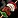 Recipe: Juicy Bear Burger is sold by
Recipe: Juicy Bear Burger is sold by  Bale /
Bale /  Malygen in Felwood. You can also make
Malygen in Felwood. You can also make
Alternative recipes
- 40x
 Poached Sunscale Salmon - 40 Raw Sunscale Salmon
Poached Sunscale Salmon - 40 Raw Sunscale Salmon - 40x Nightfin Soup - 40 Raw Nightfin Snapper
Both recipes below are sold by Gikkix in Tanaris.
285 - 300
15x  Smoked Desert Dumplings - 15 Sandworm Meat
Smoked Desert Dumplings - 15 Sandworm Meat
You have to complete two quests in Silithus to get this cooking recipe.
You can farm the needed 15x  Sandworm Meat from Dredge Strikers and Dredge Crushers in Silithus.
Sandworm Meat from Dredge Strikers and Dredge Crushers in Silithus.
Alternative recipes
- 15x
 Baked Salmon - 15x Raw Whitescale Salmon
Baked Salmon - 15x Raw Whitescale Salmon - 15x Lobster Stew - 15x
 Darkclaw Lobster
Darkclaw Lobster
Both recipes are sold by  Vivianna /
Vivianna /  Sheendra Tallgrass in Feralas.
Sheendra Tallgrass in Feralas.
Burning Crusade Classic (300-375)
TBC Cooking Trainers
There aren't any Cooking trainers in Classic TBC. To learn the new TBC Cooking skill and train above 300, you have to buy a  Master Cookbook.
Master Cookbook.
The book is sold by these two NPCs:
- Horde: Baxter in Hellfire Peninsula at Thrallmar. He's in the inn standing behind the innkeeper.
- Alliance: Gaston in Hellfire Peninsula at Honor Hold. He is located in the backroom of the Inn. /way 54.0 63.6
300 - 325
Make one of these:
30x Ravager Dog - 30x 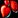
30x Buzzard Bites - 30x Buzzard Meat
Recipe location:
 Recipe: Ravager Dog is sold by Cookie One-Eye (Horde) and Sid Limbardi (Alliance) in Hellfire Peninsula.
Recipe: Ravager Dog is sold by Cookie One-Eye (Horde) and Sid Limbardi (Alliance) in Hellfire Peninsula.
You have to complete a quest chain for  Recipe: Buzzard Bites. You can pick up the first quest from Legassi in Hellfire Peninsula. /way 49.2 74.8
Recipe: Buzzard Bites. You can pick up the first quest from Legassi in Hellfire Peninsula. /way 49.2 74.8
325 - 355
You have 3 choices now.
40x Talbuk Steak - 40x Talbuk Venison
40x Roasted Clefthoof - 40x Clefthoof Meat
40x Warp Burger - 40x Warped Flesh
Recipe location:
- Recipe: Talbuk Steak and Recipe: Roasted Clefthoof are sold by Nula the Butcher (Horde) and by Uriku (Alliance) in Nagrand.
- Recipe: Warp Burger is sold by Innkeeper Grilka (Horde) and by Supply Officer Mills in Terrokar Forest.
355 - 375
Make one of these:
60x Crunchy Serpent - 60x  Serpent Flesh
Serpent Flesh
60x Mok'Nathal Shortribs - 60x Raptor Ribs
Recipe location:
-
Horde: You can buy both recipes from Xerintha Ravenoak in Blade's Edge Mountains at Ruuan Weald. She sells these in limited supply, so you have to wait if someone bought them before you. If they are not in stock, you should get them from completing the
 Mok'Nathal Treats quest because it's probably faster than waiting. (I don't know how often she restocks the recipes)
Mok'Nathal Treats quest because it's probably faster than waiting. (I don't know how often she restocks the recipes) -
Alliance: You can buy them from Sassa Weldwell in Blade's Edge Mountains at Toshley's Station. (She sells the recipes in unlimited quantity, so Alliance players should always buy them from her)